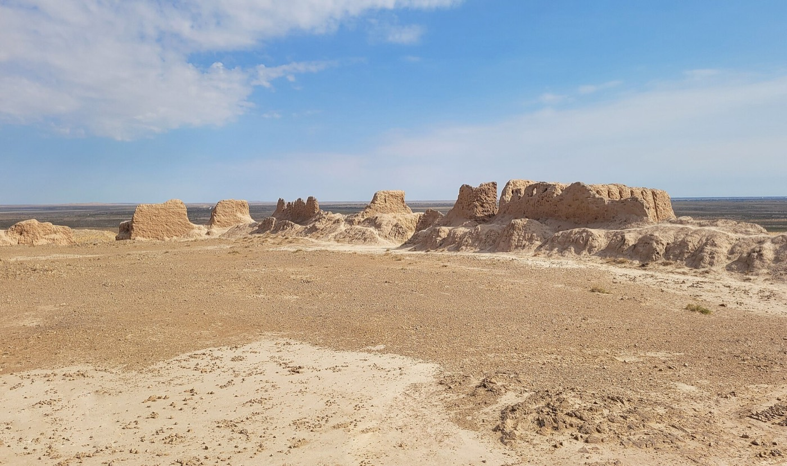
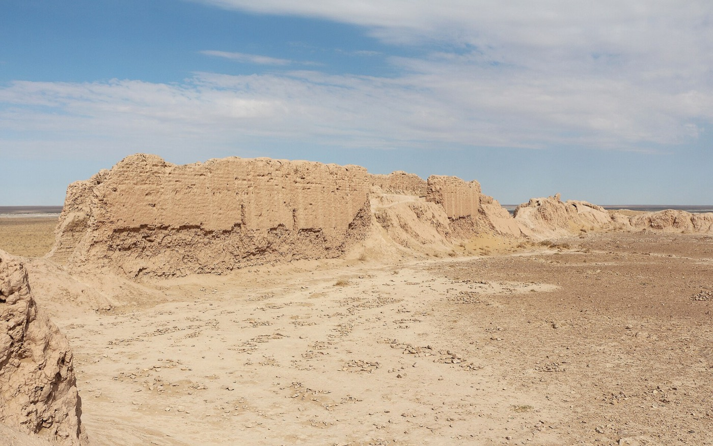
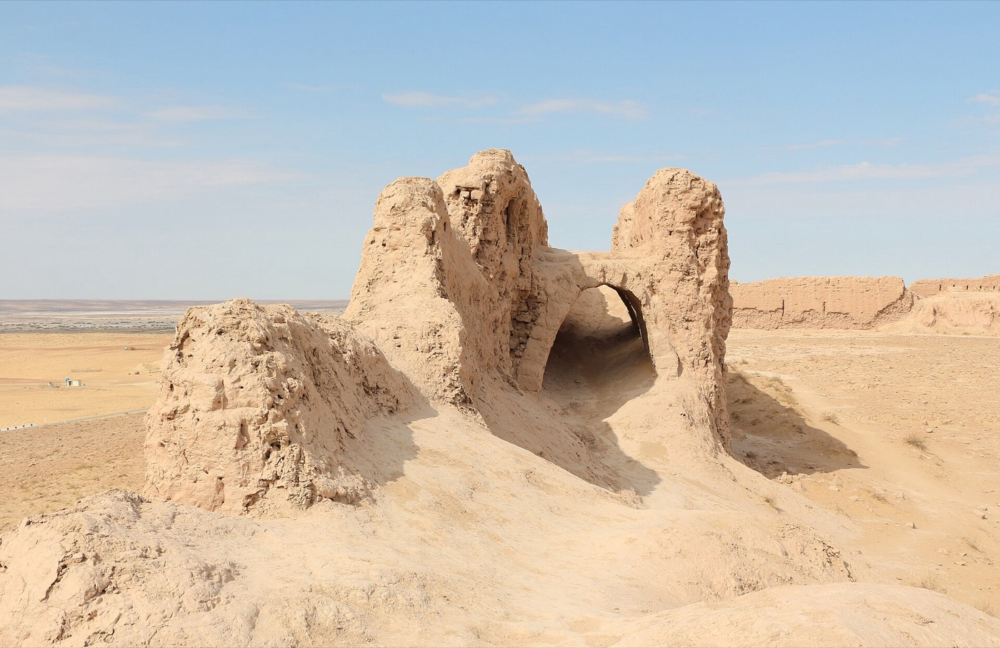
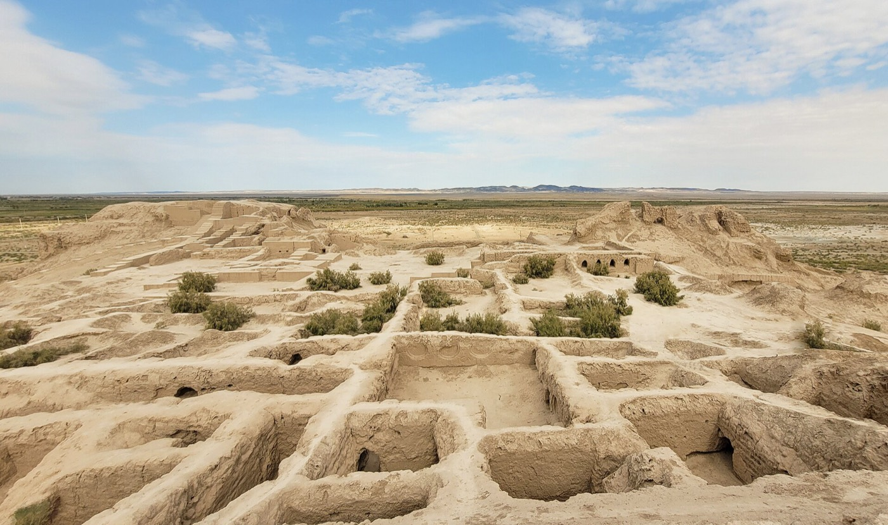
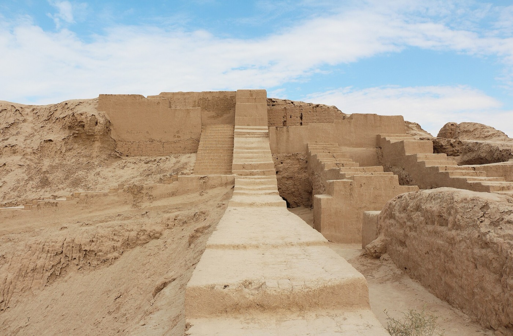
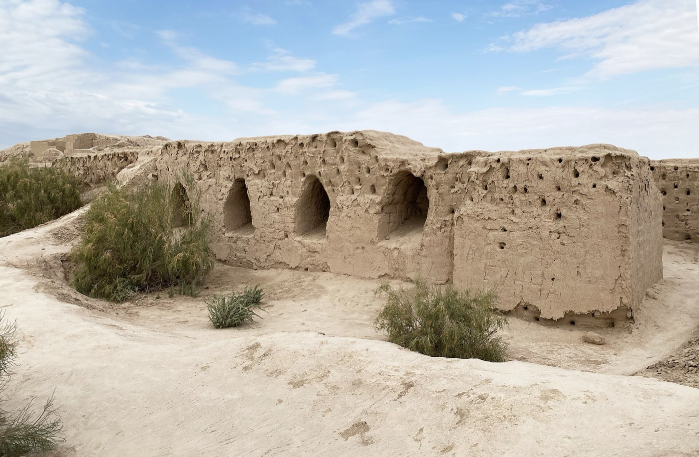

Optional detour · Khiva, Thursday April 8 or Friday April 9
Ayaz Kala and Toprak Kala are mud-brick citadels on the edge of the Kyzylkum, about 90 km northeast of Khiva across the Amu Darya. Roughly an hour and a half each way by car, with 20 minutes of dirt road at the end.
These are the same flat, sand-coloured walls in every photo because that is what they are: eroded clay in open desert. They work best in low side light, late afternoon or first thing, and look flat at noon. Climbing is allowed and the summit of Ayaz Kala 1 gives the only elevated view of the desert on the whole trip.
4th century BC to 7th century AD · three forts on one hill

The oldest and largest of the group, built by the Khorezmian kingdom as a frontier line against the steppe. Ayaz Kala 1 sits on the hilltop with walls still standing to several metres; Ayaz Kala 2 is a later round fort on a cone below it, and Ayaz Kala 3 a garrison on the plain. A yurt camp at the foot of the hill serves lunch and is the usual stop for day-trippers.


1st to 6th century AD · a royal city, not just a fort

Capital of Khorezm for about three centuries, excavated by Soviet archaeologists in the 1940s. Unlike Ayaz Kala it has a legible plan: a walled town, a high palace with reconstructed stairways, and rooms where painted plaster and clay statues were found, now in museums. It is 20 minutes from Ayaz Kala, so the two are always visited together.


Two ways in, both cost something
Thursday afternoon from Khiva. Leave after lunch, forts in the good light from about 15:30, back for a late dinner. Costs the Thursday rest and the second sunset on Khiva's walls, but keeps Friday's drive as planned.
Friday on the way to Bukhara. Leave Khiva at 07:30, forts in the morning, rejoin the Bukhara road by 11:30, arrive Bukhara about 19:00. Turns a seven-hour day into ten and loses Poi Kalyan at blue hour that evening. Only worth it if you have decided to drive rather than take the train.